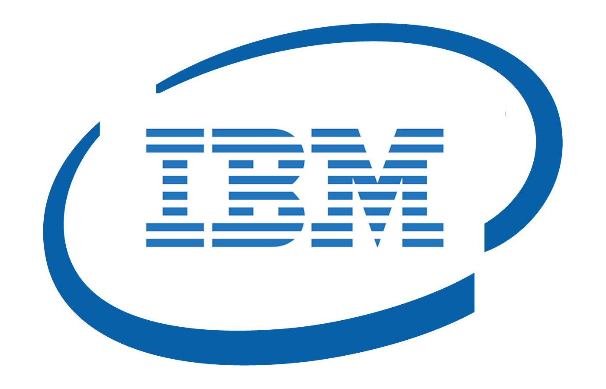
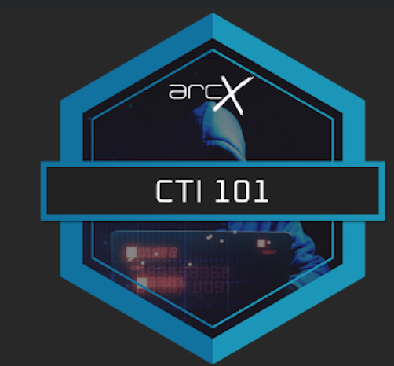

Courses & Certifications
Network Security
Authorized by Cisco

DevOps with Docker & Kubernetes
Authorized by Udemy
Ethical Hacking Essentials(EHE)
Authorized by EC-Council
Fundamentals of Red Hat Enterprise Linux
Authorized by Red Hat

Penetration Testing
Authorized by IBM

Cyber Threat Intelligence
Authorized by arcX
Contact me
Get in Touch
Name
Obaid Ullah Nisar
Address
Chakri Road Rawalpindi.
Email
obaidullahnisar123@gmail.com
Contact
+92-3455311312
Message me